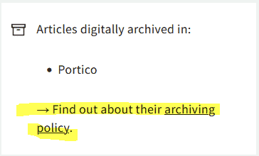
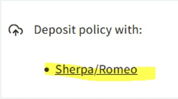
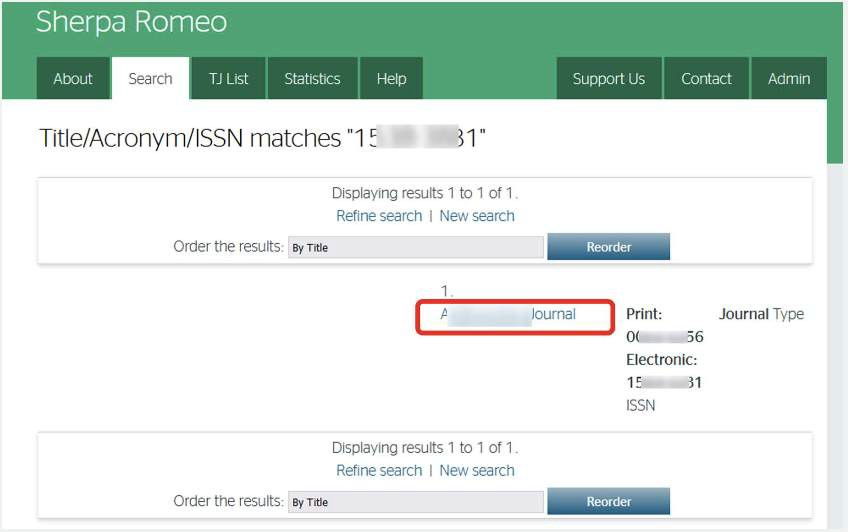
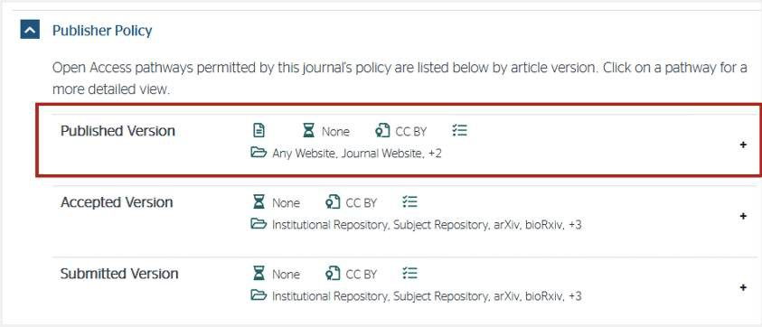
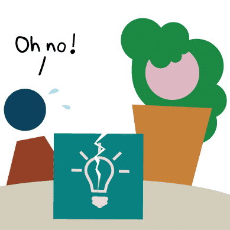
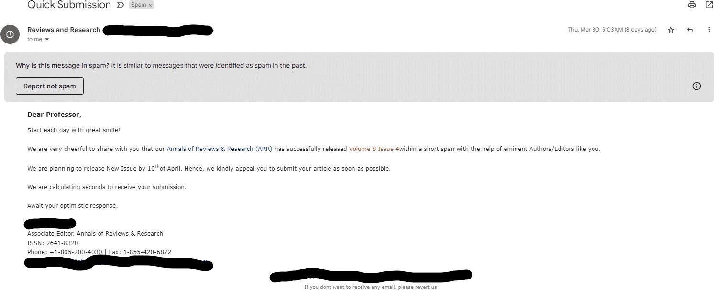

Lesson 4: Sharing Open Results#
Overview#
In lesson 3 you learned about how to make reproducible results. Now, we can finally think about how to best share those results. In this lesson we will place emphasis on publishing manuscripts as open access. You will learn what subtleties to consider when determining what journal to publish in, including how to make sense of a journal’s policies on self-archiving. Finally, we discuss some commonly held concerns about sharing open access publications, and how to overcome them. Ultimately, we want to ensure that you have confidence in your decision to publish as open access.
Learning Objectives#
After completing this lesson, you should be able to:
List ways that you can share open results to become a more collaborative, effective, scientist.
List different types of open access publications and considerations when sharing like licenses.
List some of the concerns around open access publishing, including responsibilities for authors, the threat of predatory publishers, and the fear of being wrong.
When to Share#

Part of doing open science is enabling collaborative, interactive results. Sharing different types of research objects earlier in your research process helps increase visibility to your work and accelerates your efforts by drawing from the collective knowledge of others. The internet has fundamentally changed the timing of and manner in which scientists communicate results.
Planning to share your intermediate results at the beginning of your project makes sharing final results easier. The figure above illustrates many of the different objects that can be shared before the ‘final’ report or publication. Sharing and talking about your research as you are doing it, as well as engaging with other scientists, will increase the robustness of your work.
Ask questions. Share what you are working on. You will find that many involved in the scientific community want to help. The more you engage, the larger the audience and the more impact you will have when that ‘final’ publication is published.
In the past few decades, scientists have made new connections and sought collaborators through letters and at conferences. However, this way of doing science tended to restrict who could participate. Today, most of these discussions take place on the internet, which has enabled new avenues for participatory science, open to all.
The platforms where you share research depends on what you want to share. Reference the figure above and think about where you might share different types of information. How will this influence who you have an ability to engage with?
Let’s start with sharing in smaller groups (workshops and conferences) and move to larger audiences. There are distinct reasons for communicating results to different sizes of groups, as explored in the following sections.
At Workshops and Conferences#
Many of us attend scientific conferences, workshops, and other gatherings to discuss our science with peers. The costs associated with attendance and travel to these events may limit who has access to the material presented there. At these events, scientists often give talks or present posters that are not yet peer reviewed to invite feedback from the community and potentially recruit collaborators. These interactions are important for improving research projects, and are often done when a project is still ongoing so that researchers can gather feedback early in their scientific process.
It is important to think about what audience you will be reaching at an event. Conferences have different policies about open access to materials presented at an event. Consider what you are sharing and who you want to share it with. For example, not all events provide long-term open access to workshop materials after the event. If you want to reach a larger audience or preserve the materials long-term, as a scientist, you have options to license and publish presented materials yourself (for example using Zenodo with a DOI) if an event doesn’t do so.
Other Forms of Interactive Feedback#
Other forms of sharing can serve a similar purpose to share and document your results and/or software packages, and also allow for additional flexibility and openness! There are a number of additional resources that you can use
Blog posts and online articles
Short form videos and podcasts
Computational notebooks
Social media posts
Forum discussions
These different pathways allow for the dissemination of null results, intermediate science updates and/or software improvements. These alternative ways of sharing your work can benefit your research by facilitating extended dialogue between you and collaborators, and even the general public. Additionally, the public has easier access to these forms than they do to conferences.
Here are some specific examples of engagement across contemporary platforms for scientific collaboration:
Blog posts such as the Pangeo blog - see examples of how to use different software tools for different science questions!
Computational notebooks as a way to demo software techniques (e.g. the Project Pythia Cookbook Gallery showcasing computational science workflows in the Earth sciences).
Non-peer reviewed publications, such as Research Notes of the AAS.
Team and/or Mission Science Pages, such as the LUVOIR team’s page or the Juno mission’s page.
Conference proceedings, such as from the Society of Photo-Optical Instrumentation Engineers.
Social media posts: https://twitter.com/MartianColonist/status/1706824699349488036
Over the course of a 3 year study, the Journal of Medical Internet Research found that highly tweeted articles were 11 times more likely to be highly cited than less tweeted articles.
Publishing Reproducible Reports and Publications#
An open access report and paper can be reproducible when its data, software, and content are made available to the readers following best practices. There is a growing list of resources documenting how to make open results reproducible (such as The Turing Way and FORRT).
There are several examples (discussed in these lessons) that demonstrate how we can integrate technical and collaborative solutions to enable reproducibility. For example, executable notebooks allow interactivity and testing, training workshops invite feedback for improvement and GitHub/GitLab enable community based open review.
Scholarly Journals
Publishing work in a peer-reviewed journal forms the traditionally written basis of how we share our science, and is important for communicating scientific detail and rigor to colleagues. Academic journals also act as a long-term archive of scientific research papers. For many scientists, publishing in peer-reviewed journals and receiving citations are key factors in how they are evaluated for career advancement, positions appointments, committee memberships, and honors.
Traditionally, authors pay an Article Processing Charge (APC) that can range from $200-$12000 USD. Higher profile journals often charge higher fees to authors. Accessing articles has traditionally been restricted by pay-walls that require a subscription or charge per article. Journals have different options for making your published work accessible to various communities.
Who Has Access to Journal Subscriptions?
Paywalls limit who can access scientific research. This barrier acts to limit who can participate in science and erodes public trust in results. Part of open science is ensuring worldwide access to research.
Open Access Journals
Open access journals are peer-reviewed journals that are more accessible because they don’t require readers to have a subscription or pay to access the content. However, open access journals often require additional fees for the author. Open access peer-reviewed articles are archived by a more formal discussion of scientific ideas, interpretations, and conclusions. They form the basis of how researchers share results.
Activity 4.1: Read the Open Access Policies of Publishers That You Use#

In this activity, you will learn how to access information about a journal’s data archive policies. The Directory of Open Access Journals (DOAJ) provides an extensive index of open access journals around the globe. The DOAJ can be used to look up information, including data archiving policies, for journals that publish research. Let’s open up this website and look up the policies specific to your most-used journals.
First, navigate to the DOAJ website.
Type in the name of one of the following journals in the search box, and then click on the yellow “SEARCH” button.
Atmospheric and Oceanic Science Letters
Swiss Journal of Geosciences
History of Geo-and Space Sciences
Note: You may input any journal desired but for this exercise use one of those listed to see the Sherpa/Romeo link that is listed in Step 5.
The search results may show more than one match. Select the desired journal within the search results by clicking on the journal name.
A dashboard appears, giving information regarding publication fees, waiver policies, the type of open license used, and other information on multiple displayed titles.Click on the “archiving policy” link appearing in one of the displayed boxes as seen here. This will provide links to extensive information regarding the journal’s open access policies for the manuscript itself:

An extensive amount of information will be presented, including details on the publishing policies specific to the selected journal.Alternatively, to get a more condensed view of the journal’s policies, return to the DOAJ dashboard on the About page with the multiple boxes displayed, and click on the “Sherpa/Romeo” link as shown here.

On the Sherpa Romeo page, click on the journal name that is displayed in the list (the only journal displayed).

When you view the page, you see that it consolidates and summarizes the open access policies for that journal and associated materials. The published version is likely to be the most relevant (see red box in figure).

Review the page and determine which license the journal you selected has defined for reusability for manuscripts.
Activity Key Takeaways: Read the Open Access Policies of Publishers That You Use#
This is an example of a site that you can use to determine if a journal’s policy is consistent with how you wish to publish your open access results. Journal policies should always be reviewed and considered during the early planning phase of your project and well before submitting your manuscript for publication.
Other Considerations When Sharing#
Who is Sharing?#
When writing an OSDMP, it’s important to include a plan for the roles and responsibilities needed to share your results. As discussed in lesson 3, your community will consist of members in different roles – some actively engaged, some with only a passing interest. Having a clear plan for sharing open results and how credit will be given will help everyone understand their contributions and roles and minimize conflict.
Lesson 3 describes in detail the different roles that people may play in sharing results. This should be clearly described In the OSDMP.
Predatory Publishers#
Predatory Publishers are generally for-profit publishers that charge a publishing fee but provide few quality checks on the quality of the publication that would be expected from scholarly publications. They sometimes use the benefit of open access to entice authors to publish with them. If you are unsure if a publisher may be predatory, checking with your library staff is a good place to start.
There are many red flags in these requests for predatory publishers:
There is an urgency and request for an extremely quick turnaround. A very fast publication time might indicate a less rigorous peer-review process.
Written English in correspondence is often poor quality with many grammatical errors. (Though it’s important to remember that this alone does not indicate predatory behavior, as grammatical mistakes can be made for innocent reasons, such as being a non-native speaker.)
The journal subject is nonspecific.
The solicitation is inaccurate or generic.
The email is often unsolicited, even if they claim that they’re referring to a previous paper of yours. This might start with an inaccurate or generic solicitation such as “professor”.
They emphasize ISSN indexing and/or impact factors, although this particular journal doesn’t have one. Consider Journal Citation Indicator (JCI) in addition to Journal Impact Factor (JIF).
The publisher/journal sends multiple emails soliciting manuscripts, special issues, and editorial roles.
They have a high number of special issues, such that the majority of the papers published appear in special issues.
Their name resembles the name of a prestigious journal.
They have a high self-citation rate, such as over 20%.
They have a very high acceptance rate of submitted papers.
They send frequent requests to submit/serve as editor.
Below are some final thoughts on what or what not to consider when deciding where to publish. As with many considerations you will encounter in academia, sometimes deciding the best place to publish will be determined by word of mouth conversations with peers. Read more on NOAA’s guidance on predatory publishing.
Common Questions About Sharing Results#
Sharing in different ways, especially without peer-review, can be intimidating. Maybe you have worried about the following questions:
What if an open result is wrong?
A tweet, post, or video is only a snapshot in time of a research result. It is understood by all working professional scientists that we are constantly learning and discovering new things. Making reproducible results will necessarily include different versions and revisions of an idea as it develops.I have already published my science as an open result, so do I need to respond to community feedback forever?
As long as you have done everything to make your work reproducible - you don’t need to worry. Open science can’t be carried solely by a single person. Open science communities can continue to update, refine, and develop your open science result if your work has been shared and openly licensed.
If you are able to address a question or a concern about your prior research, that’s great. It is also an ethical response to acknowledge that this is research that you are no longer actively involved with, but allow others to continue the work that you began.What if I can’t do everything? Am I a bad open scientist?
The short answer is no! You have only a limited amount of time. Even with collaborators, you can’t possibly do everything.
Sharing open results improves science - it is faster, more accessible, and more collaborative. In this lesson you have learned about all the different ways you can share open results. Think about how you might share something you are working on now!
Lesson 4: Summary#
In this lesson, you learned:
When to share open results and the different ways in which they can be shared. This includes: peer reviewed publications, conference proceedings, blog posts, videos, notebooks, and social media.
How to share open results including considerations around the license for the publication, routes for open access publications (Green, Gold, Diamond), and preprints as part of the publication process.
Considerations around sharing, including considerations around predatory publishers and common concerns around openly sharing of results.
Lesson 4: Knowledge Check#
Answer the following questions to test what you have learned so far.
Question
01/03
Which of the following Creative Commons licenses is most commonly used for open access publications?
CC BY-NC-SA
Copyright
CC-BY
Apache 2.0
Question
02/03
Read the statement below and decide whether it’s true or false.
Diamond open access is both free to publish and to read scientific articles.
True
False
Question
03/03
Take a close look at the request for journal submission below. Does this request for journal submission seem reliable?

Yes
No